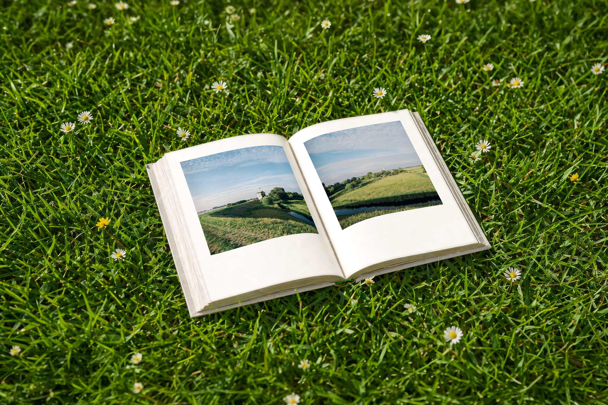
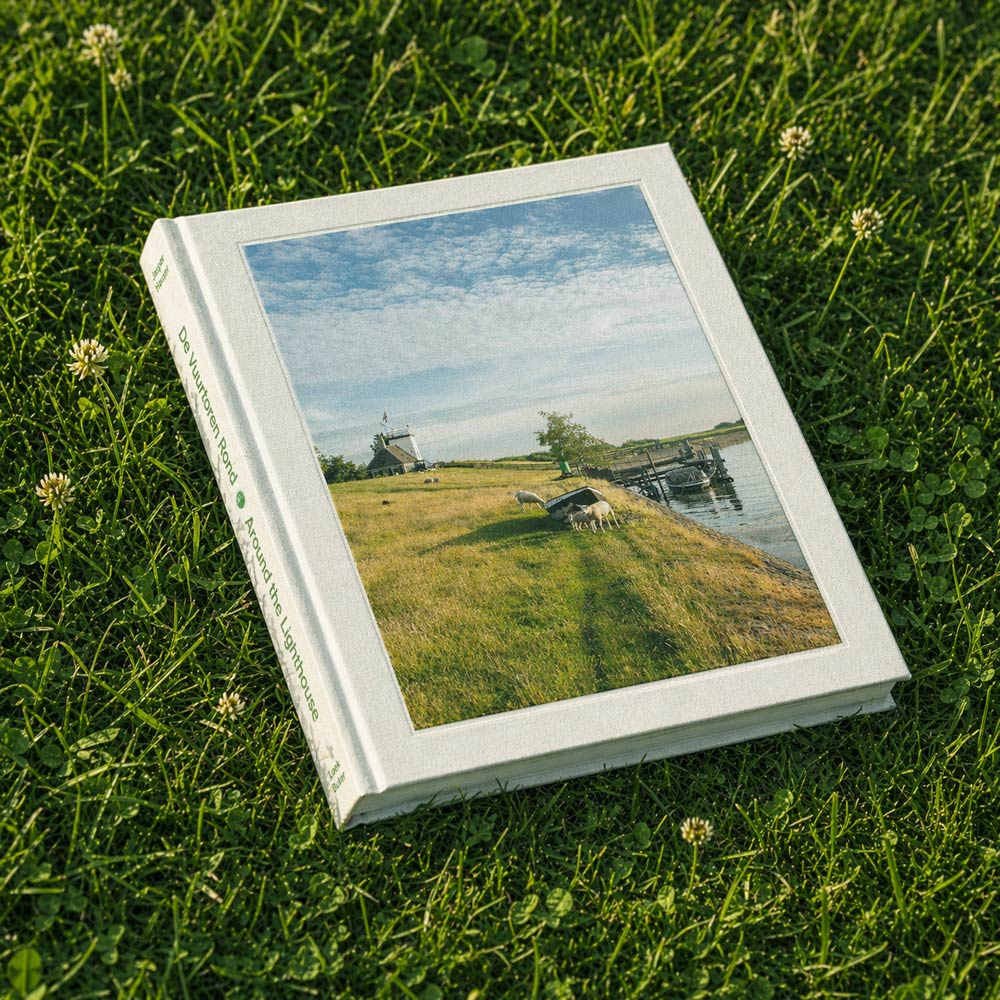
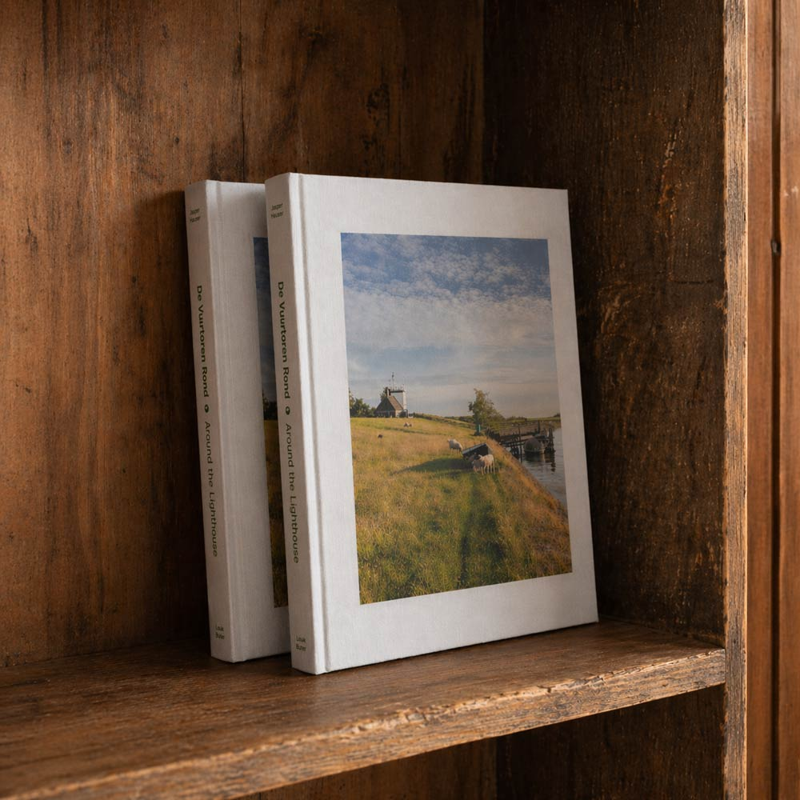

Speciale Editie
- Exclusief voor €125
- 25 gelimiteerde exemplaren
- Boek + twee prints, 30 x 30 cm
- English & Nederlands
- Genummerd boek en prints
- Gesigneerd door Loek & Jasper

Een jaar rond de vuurtoren van het Friese Workum — Aan de rand van het IJsselmeer, waar land, wind en water elkaar voortdurend raken, leven Cornelie en Reid († 2020) al decennia in het ritme van deze plek. Hun wereld beweegt mee met de seizoenen: met dieren en tuin, oogst, stilte, storm. Zo ontvouwt zich een bestaan dat zeldzaam is geworden: eenvoudig, zelfvoorzienend en diep verbonden met de natuur.
Vier seizoenen lang keerden fotograaf Loek Buter en Jasper Hauser, Reid’s kleinzoon, terug naar de vuurtoren. Loek — tweevoudig Zilveren Camera-winnaar — fotografeerde met zijn middenformaatcamera, langzaam en aandachtig. In zijn eerste fotoboek komen die beelden samen met persoonlijke teksten van Loek en Jasper, over herinnering, perspectief en de vraag wat een plek door de jaren heen in zich bewaart.




gepubliceerd in



Lees de oorspronkelijke online verhalen en ontdek hoe het project door de seizoenen groeide.


National Geographic Magazine Nederland
Autarkie als ambacht - 06/2021

volkskrant.nl
Rond de Vuurtoren - 11/2021

National Geographic Magazine China
Around the Lighthouse - 06/2022

GEO Magazine - Germany
Die Hüterin des Deichs - 09/2022

Floortje blijft hier - bnnvara.nl
Op bezoek bij Reid & Cornelie 11/2020

museemagazine.com
Photo Journal Monday - 06/2022